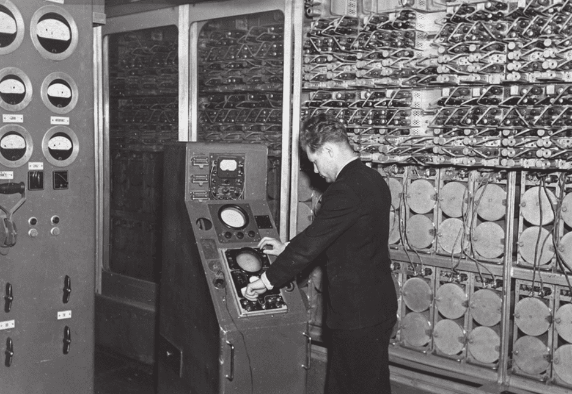

.svg)

.svg)
Компьютеры первого поколения в СССР
После Второй мировой войны часть немецких разработок в области компьютерных технологий перешли СССР. Ведущие специалисты сразу заинтересовались возможностями ЭВМ, а правительство согласилось, что устройства для быстрых и точных вычислений — это перспективное направление.
МЭСМ и БЭСМ
В 1948 году основоположник советской вычислительной техники С.А. Лебедев направил в Академию наук СССР докладную записку: в ней сообщалось о необходимости создания ЭВМ для практического использования и научного прогресса. Для разработки этой машины под Киевом, в Феофании институту отвели здание, ранее принадлежавшее монастырю. Через 2 года МЭСМ (малая электронная счетная машина) произвела первые вычисление — нахождение корней дифференциального уравнения. В 1951 году инспекция из академии наук приняла работу Лебедева. МЭСМ имела сложную трехадресную систему команд и следующие характеристики:
- Тактовая частота — 5 КГц
- Быстродействие — 3000 операций в минуту
- 6000 вакуумных ламп
- Потребляемая мощность — 25 КВт
- Площадь — 60 кв.м
- Ввод данных: перфокарты или магнитная лента
- Память на триггерных ячейках
МЭСМ
В 1950 году Лебедева перевели в Москву. Там он начал работать над БЭСМ-1 и к 1953 году построил опытный образец, отличавшийся отличной производительностью. Характеристики были следующими:
- Быстродействие — до 10000 операций в минуту
- 5000 вакуумных ламп
- Потребляемая мощность — 35 КВт
- Площадь — 1000 кв.м
БЭСМ-1 получилась ЭВМ широкого профиля. Её планировали предоставлять ученым и инженерам для проведения различных работ.
БЭСМ
Серия «М» и «Стрела»
В тоже время в Москве велась работа над М-1. М-1 была намного менее мощной, чем МЭСМ, но при этом занимала намного меньше места и тратила меньше энергии. Характеристики М-1:
- 730 вакуумных ламп
- Быстродействие — 15-20 операций в секунду
- Потребляемая мощность — 8 КВт
- Площадь — 4 кв.м
- Память электронно-лучевых трубках
M-1
В 1952 году на свет выпустили М-2. Её мощность увеличилась практически в 100 раз, при этом количество ламп увеличилось только вдвое. Подобный результат получился благодаря использованию управляющих полупроводниковых диодов. Характеристики М-2 были следующие:
- 1676 вакуумных ламп
- Быстродействие — 2000-3000 операций в секунду
- Потребляемая мощность — 29 КВт
- Площадь — 22 кв.м
- Память электронно-лучевых трубках
M-2
В «массовое» производство первой попала «Стрела». Всего было произведено 7 штук. Характеристики «Стрелы» были следующие:
- 6200 вакуумных ламп и 60 тыс. диодов.
- Быстродействие — 2000 операций в секунду
- Потребляемая мощность — 150 КВт
- Площадь — 300 кв.м
- Память электронно-лучевых трубках

Стрела
Во многих смыслах «Стрела» была хуже М-2. Она выполняла всё те же 2 тысячи операций в секунду, но при этом занимала на порядок больше места и тратила в несколько раз больше электричества. М-2 не попала в массовое производство, поскольку её создатели не уложились в срок. М-1 не обладала хорошей производительностью и к моменту, когда М-2 была доведена до ума, «Стрела» была отдана в производство.
Следующий потомок серии «М» — М-3 вышел в 1956 году и был в каком-то смысле урезанным вариантом. Она выполняла порядка 30 операций в секунду, но при этом занимала мало места, благодаря чему пошла в серийное производство. Характеристики М-3 были следующие:
- 774 вакуумных ламп
- Быстродействие — 30 операций в секунду
- Потребляемая мощность — 10 КВт
- Площадь — 3 кв.м
M-3
Итог
На равне с великими державами того времени, СССР тоже развивал компьютерную индустрию. Компьютеры СССР не уступали западным моделям ЭВМ. В то время были созданы десятки новых архитектур для построения компьютеров, многие были лучше зарубежных. Но в какой-то момент от них было решено отказаться в пользу западных решений.